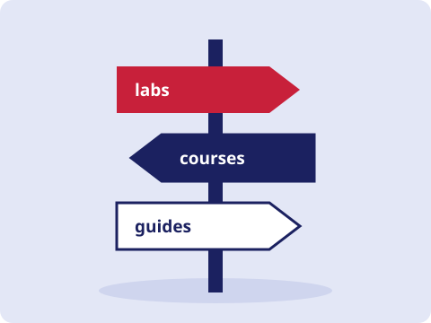

WebPenTest 101
WebPenTest 101References
Places to keep learning. Each one gives you a legal environment to practise in.

TryHackMe
Best for complete beginners
Guided "rooms" with a machine that runs in your browser, so you can follow along without building a lab first.
tryhackme.comPortSwigger Web Security Academy
Best if you want to focus on web vulnerabilities
Free lessons and hands-on labs covering SQL injection, XSS, access control and more, made by the team behind Burp Suite.
portswigger.net/web-securityCylab Academy
Best if you prefer structured courses
Cybersecurity training with courses and exercises. Check the site for what's currently offered and what it costs.
cylab.academyOWASP
Best as a reference to come back to
The Top 10 and the Web Security Testing Guide explain each risk and how testers check for it.
owasp.org